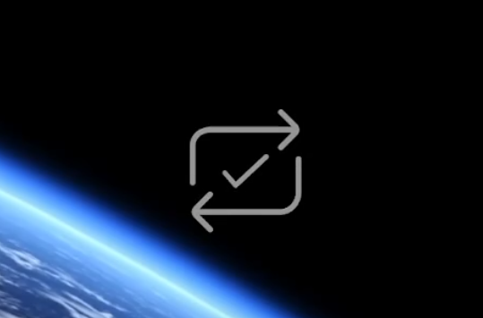
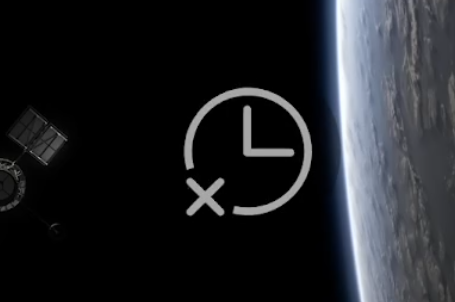

How to Use Your Extension
Once the extension is installed, you can use it to create and manage loops in YouTube videos. Here's how to use the extension:
- Open a YouTube video in your browser.
-
 Drag the range slider to select the end time of the loop.
Drag the range slider to select the end time of the loop.
-
 Click on the Loop button to create a loop at the youtube player current time.
Click on the Loop button to create a loop at the youtube player current time.
-  If the loop was successfully made
-  If the loop was unsuccessful
-
 The selected loop will be added to the list of loops for the current video.
To delete a loop, click on the delete button next to it in the loops list.
To select and play a loop, click on the play button next to it in the loops list.
The selected loop will be added to the list of loops for the current video.
To delete a loop, click on the delete button next to it in the loops list.
To select and play a loop, click on the play button next to it in the loops list.